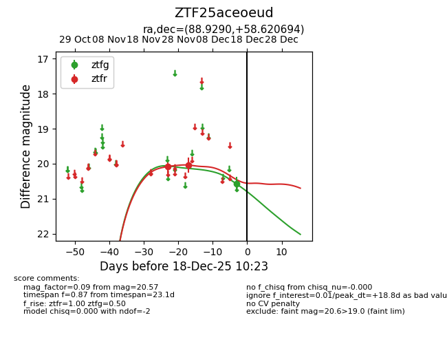
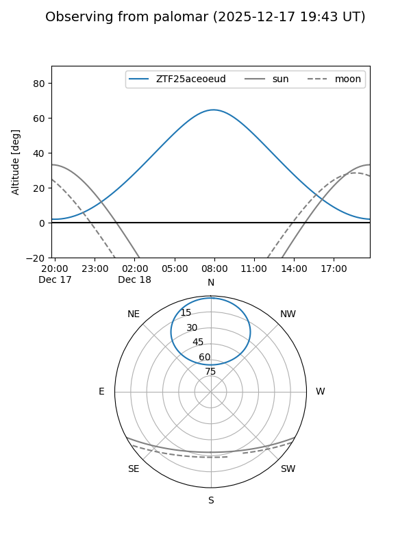

ZTF25aceoeud
Target ZTF25aceoeud at 2025-12-18 11:17
Aliases and brokers:
FINK: fink-portal.org/ZTF25aceoeud
Lasair: lasair-ztf.lsst.ac.uk/objects/ZTF25aceoeud
ALeRCE: alerce.online/object/ZTF25aceoeud
alt names
ZTF25aceoeud (ztf,fink_ztf)
Coordinates:
equatorial (ra, dec) = 88.9290,+58.62069
equatorial (HMS+DMS) = 05:55:42.97,+58:37:14.50
galactic (l, b) = (154.6731,+16.12454)
Photometry
last ztfg=20.57, ztfr=20.04
1 ztfg, 2 ztfr detections
Lightcurve

Visibility


Additional plots